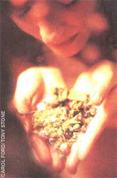
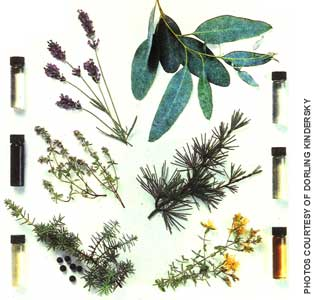
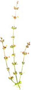
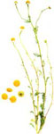
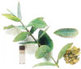
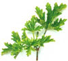
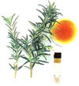
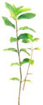
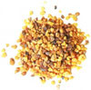

HERBAL REMEDIES
Whether it's stress or sore feet relief may be just a sniff away.
Aromatherapy involves the use of essential oils to reduce stress and promote healing and wellness. According to practitioners and devotees of the craft, these essential oils-extracted from the roots, stems, branches, bark, leaves, fruit, and flowers of various plants-carry medicinal properties that are activated when massaged into the skin, inhaled, used in baths, or diffused throughout a room.
"Aromatherapy may take a little bit longer to work [than do Western medicines]," says Carolyn Sajdecki, lecturer of aromatherapy at the College of DuPage in Illinois. Its power works quietly, she explains, but the changes it can bring about are far more lasting-addressing the root cause of a problem, rather than just masking the symptoms.
Sajdecki makes a clear distinction between cosmetic fragrances and essential oils. A lemon-scented fragrance, though it may smell like pure lemon essence, does not have the essential oil's antiseptic and astringent therapeutic properties. "Aromatherapy is more than just messing around with pretty smells," she says.
Aromatherapy can ease pain, kill bacteria, and cleanse the body of toxins, say its advocates. Each of the 130 or so varieties of essential oils used by aromatherapists is believed to have specific healing properties that can help relieve life's everyday pressures, stresses, and ailments, from sore throats and winter colds to more serious problems like bronchitis, sinusitis, and rheumatism.
Aromatherapy relies on the sophisticated human olfactory system, of which the nose is but one component, explains author Susanne Fischer-Rizzi in her Complete Aromatherapy Handbook . The olfactory bulb, located at the top of the inner nasal cavity approximately at eye level, is covered with a mucous membrane about the size of a nickel. Despite its size, the membrane's structure and function is "nothing short of miraculous," notes Fischer-Rizzi, who explains: "The olfactory membrane is the only place in the human body where the central nervous system is exposed and in direct contact with the environment ... The hairs attached to the nerve cells-up to 80 million of them-are capable of carrying an incomprehensible amount of information, a capability that outperforms every known analytical human function."
With smell the keenest of all senses, humans are able to discem more than 10,000 odors. Our sense of taste is paltry by comparison. The tongue is capable of recognizing only that which is sweet, sour, bitter, or salty. All other perceived flavors are actually odors.
Smell is also closely tied to memory. There is nothing that can evoke a past time, place, or emotion better than an aroma.
Thus, aromatherapists use neuroassociative conditioning when treating their clients. In this technique, a fragrant blend of essential oils is used to massage the client, relieving tension and stress. The blend must be agreed upon by both aromatherapist and client, since the therapy won't work if the client doesn't like the smell of the essential oils. When the client leaves the session and later uses her personal blend in a bath soak, spritz bottle, or on the skin as a perfume, her body will remember the feeling of relaxation experienced when she fast smelled the blend during the massage session.
In addition to massage, people can experience aromatherapeutic oils in numerous ways-including rubbing diluted essential oils on the temples, breathing oil-laced fumes through a steam inhaler, or adding a few drops of an essential oil to a room humidifier.
Moreover, many pure essences have specific pharmacological properties that go beyond odor For instance, while inhaling the aroma of frankincense can deepen breathing, the oil or incense extracted from the tree's gum resin also has anti-inflammatory, antiseptic, and antifungal agents.
According to the National Association of Holistic Aromatherapy (NAHA), the last half-decade has seen tremendous growth in aromatherapy product sales, as consumers have become increasingly savvy about the healing powers of essential oils. Currently worth an estimated $300 million a year, the U.S. aromatherapy market is expected to quadruple in the next five years, predicts NAHA President Cheryl Hoard.
As the country's largest nonprofit educational organization dedicated to aromatherapy, NAHA took it upon itself a couple of years back to conduct a nationwide survey on the state of its favorite healing art. What the organization found is that aromatherapy is big business for lots of small companies. Despite the "aromatherapy" sections that have cropped up in numerous chain retail stores (usually featuring fragrant lotions, soaps, shampoos, and the like), the real aromatherapy market-wholesalers and retailers of true essential oils and related products and services-remains in the hands of mom and pop, or more likely, just mom. "The growth of aromatherapy has not been in big business but in the many burgeoning small companies, predominantly owned by women, that sell essential oils and essential-oil products," notes Hoard. "There are over 2,000 businesses that gross over $100,000 a year, with more opening every day."
Why the boom? NAHA pins the popularity of aromatherapy on, among other things, a growing disillusionment with today's high-cost health care industry, combined with consumers' desires to return to a more natural lifestyle.
Mindy Green, director of educational services at the Colorado-based Herb Research Foundation, concurs. "People today are much more willing and interested in Liking an active role in their health," she says. "They are concerned with prevention, rather than just waiting to get sick."
Like Sajdecki, Green sees a real place for aromatherapy in today's pharmacopoeia, although both women admit that it and other alternative remedies should not supplant modem medicine entirely. "Nobody's saying that if you have a car accident and someone puts a bottle of chamomile under your nose, everything will be okay," says Sajdecki. But, says Green, "It's important for consumers to have a choice ... to know their options."
When asked why people should try aromatherapy, Sajdecki's answer is simple: "It's really pleasant. And it works."
Aromatherapy Massage: The Complete Illustrated Guide to massaging with Essential Oils, by Clare Maxwell-Hudson (Dorling Kindersley Limited, 1994)
Complete Aromatherapy Handbook, by Susanne Fischer-Rizzi (Sterling Publishing Co., Inc., 1989)
The Fragrant Mind, by V. A. Worwood (New World Library, 1996)
Amrita Aromatherapy 1-800-4l0-9651
Aveda 1-800-328-0849
Essential Oil Company 1-800-729-5912
American Alliance of Aromatherapy
P.O. Box 309
Depoe Bay, OR 97341
1-800-809-9850
Herb Research Foundation
1007 Pearl Street, Suite 200
Boulder, CO 80302
(303) 449-2265
National Association of Holistic
Aromatherapy
P.O. Box 17622
Boulder, CO 80308-7622
1-888-ASK-NAHA
Read up on aromatherapy. There are plenty of books, articles, stores, companies, and organizations dedicated to aromatherapy.
Most essential oils smell best when used in small amounts; use only the few drops that each recipe requires.
Keep essential oils away from children, pets, and open fire (yes, they're flammable).
Don't apply oils to the skin neat (undiluted). Always patch-test new essential oils.
Place a diluted drop on inner wrist, apply a Band-Aid, and check after 12 hours. If there is any irritation, do not use that essential oil. Avoid the eye area; if oils do get in the eye, rinse with cool water.
Store essential oils in labeled dark glass bottles, in a cool dark place with nonrubber lids, tightly secured to prevent evaporation. Ideally, use essential oils within a year, and within three months if mixed with carrier oils.
It takes 30 roses to produce just one drop of pure rose essence. Because of their high concentrations, essential oils are extremely potent and can dry or irritate the skin if used alone, and so should always be diluted before being applied.
For massage, essential oils are diluted in a carrier oil to produce what is known as a "personal blend." Choose a carrier oil that suits your skin type and special needs. All-purpose carrier oils include apricot kernel oil and sweet almond oil (good for sensitive skin), soy oil and grapeseed oil (good for oily skin), and sunflower oil.
Add the following special carrier oils to the all-purpose ones to make longer-lasting, more absorbent blends that are suitable for treating dry dehydrated skin: carrot oil (add only 10% to all-purpose carrier oil, since this stuff is not only pricey, but the orange color can temporarily stain the skin); sesame oil (use only the oil from uncooked seed); or avocado oil (rich in vitamins A and B, this excellent skin softener is good for dry chapped skin).
Jojoba, which is not an oil but a wax, can also be added to the blend to lengthen its shelf life.
Mynou deMey, director of the New York-based American Institute for Aromatherapy and Herbal Studies and the New York director of the National Association for Holistic Aromatherapy, suggests the following blends and treatments for MOTHER readers.
To ease stress, mix:
2 drops bergamot (bergaptene-free)
2 drops clary sage
3 drops lavender
1/2 ounce carrier oil
Massage: full body
For coughs and colds, mix:
2 drops eucalyptus
2 drops frankincense
2 drops roman chamomile ounce carrier oil
Massage: chest and back
For PMS and menstrual cramps, mix:
2 drops clary sage
2 drops geranium
2 drops sage
1/2 ounce carrier oil
Massage: abdomen
For muscle fatigue, mix:
3 drops rosemary
2 drops sweet marjoram
1/2 ounce carrier oil
Massage: affected area
For constipation, mix:
4 drops cardamom
1/2 ounce carrier oil
Massage: abdomen clockwise
Bath
Invigorating bath:
3 drops ginger
3 drops rosemary
2 drops juniper berry
I cup whole milk
Draw a warm bath and climb in. Add the milk, followed by the oils, stir, and enjoy. Note: this bath is recommended for the morning, not the evening. According to deMey, these essential oils are stimulating to the nervous system.
For tired feet:
8 cups lukewarm water in foot bath
4 drops peppermint
1cup whole milk
For headaches:
1 drop sweet marjoram
1 drop peppermint
2 drops lavender cold compress (wet washcloth or towel)
Keep eyes closed and put compress over forehead and eyes.
For coughs and colds:
4 cups boiling water
2 drops ravensara oil
1drop frankincense
Add oils to boiling water in a bowl. Drape a towel over your head, close your eyes, and lower your face toward the bowl. The towel shouldn't touch the water but should touch the edges of the bowl, trapping the steam so that you get the full benefit of the fumes rising from the boiling water. Breathe the essential oil-laced fumes for about ten minutes. Repeat the procedure later in the day.
|
 |
 |
 |
|
 |
 |
 |
|
 |
 |
 |